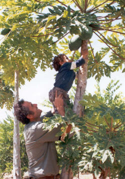

|
|
 Crédito Agrícola
La cartera de créditos agrícolas
en la Caja Municipal de Sullana se va constituyendo durante los años de
1995 al 2001 en el producto de mayor potencial de crecimiento en el
contexto de las colocaciones a la Micro y Pequeña Empresa.
El número de agricultores atendidos durante este periodo ascendió a 19 mil
créditos con un monto colocado de 90 millones de Nuevos Soles.
El destino de los préstamos a esta actividad productiva importante de la
economía de la Provincia de Sullana se ha orientado a los cultivos de
arroz, maíz, limón, plátano, frutales y ganadería.
Cabe resaltar además que durante el año 2001 en el mes de noviembre se
inició la atención de créditos al sector agrícola en las ciudades de
Huacho y Barranca, culminando el año con un saldo promedio de 500 mil
Nuevos Soles otorgados en las dos ciudades.
La Caja Municipal de Sullana ha venido otorgando financiamiento a este
sector desde el año 1993 en que este servicio inició sus actividades de
manera experimenta¡ luego de realizarse un estudio de mercado de los
valles agrícolas de¡ Chira y San Lorenzo asesorado y apoyado por el
Convenio Peruano - Alemán.
|